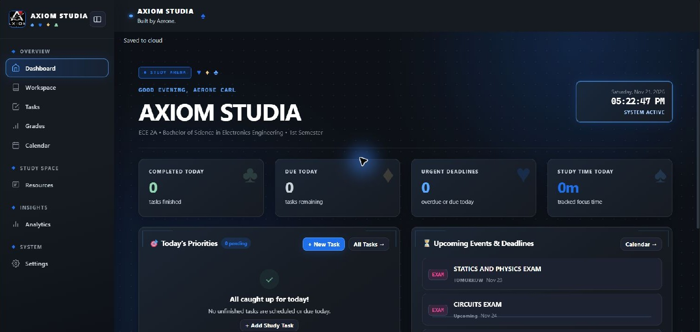
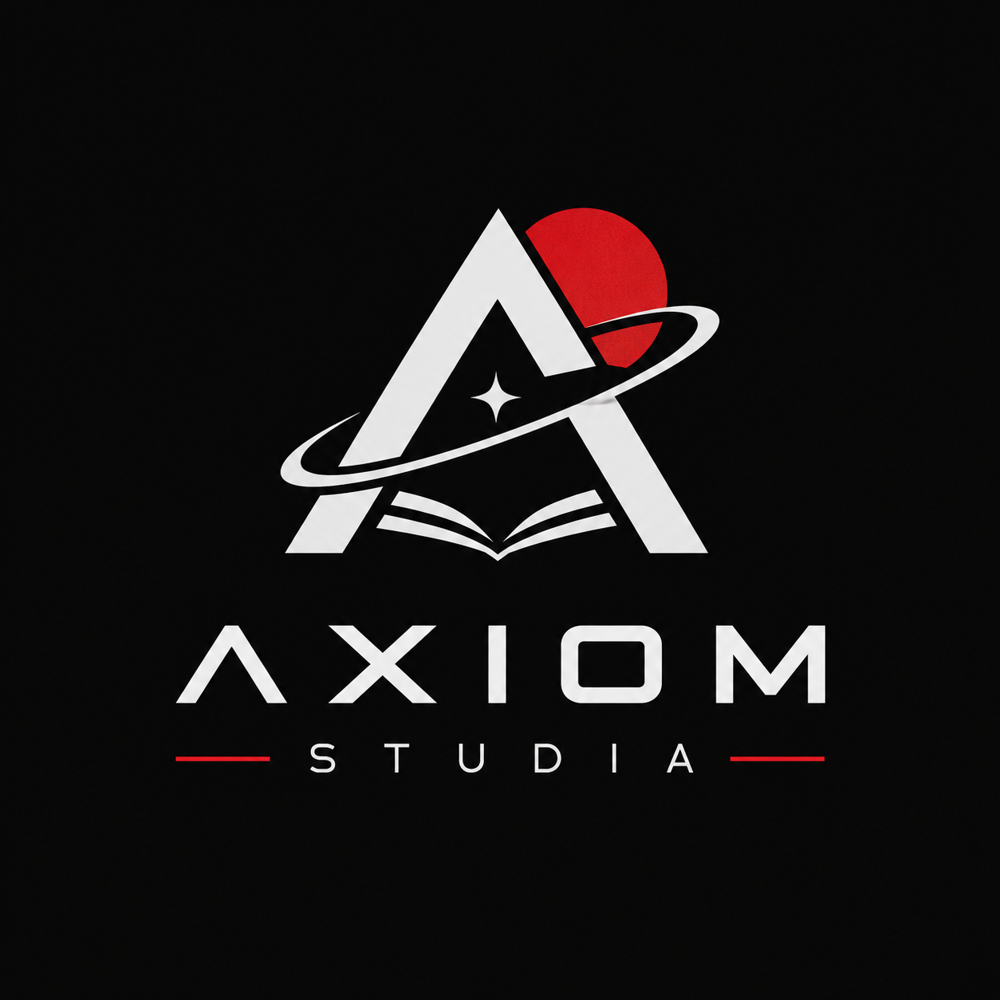
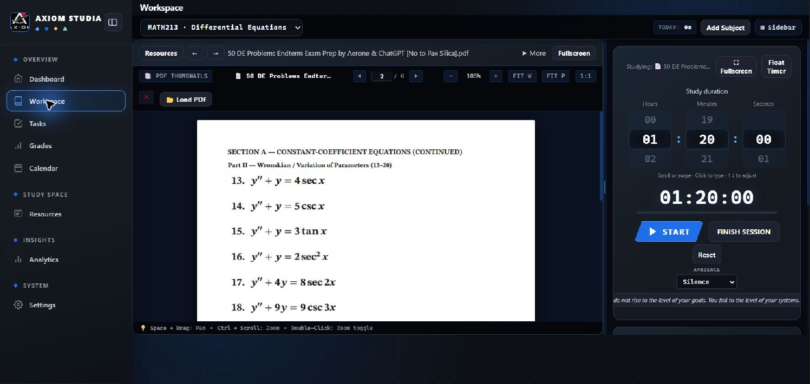
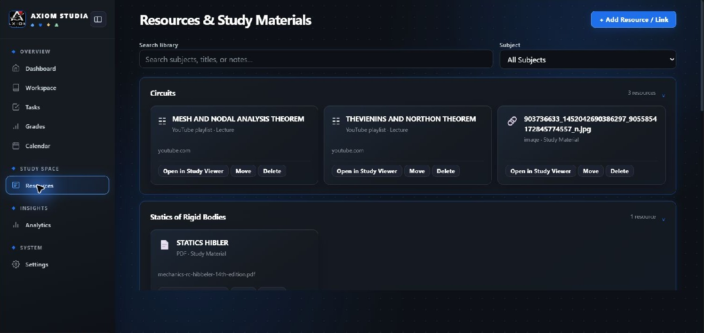
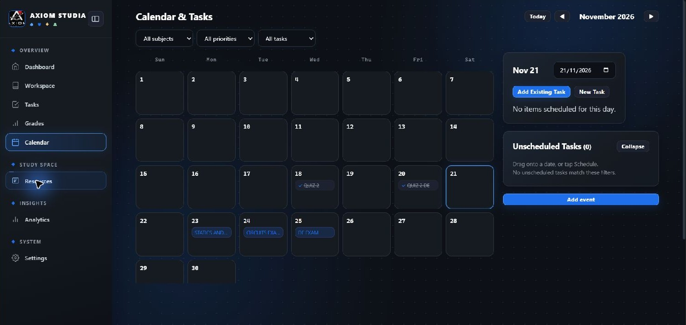

Axiom StudiaAcademic Productivity & Study Workspace
Inside the current app
Four screens from the live app, captured November 21, 2026. Open an image to view it at full size.



Overview
A personal web app I am building around my engineering coursework. Its subject Workspace puts study materials beside a focus timer, tasks, and resources, so I can read and study without constantly switching tools. Grades, a calendar, and analytics help me plan and review the rest of my academic work.
Problem Statement
My study materials, deadlines, grades, and focus sessions were spread across different tools. I wanted a place where I could open a subject, find its materials, choose a task, and start studying with less setup.
Objectives
- Bring PDFs, videos, links, tasks, and a focus timer into each subject Workspace.
- Connect daily priorities and calendar scheduling with longer-term grade goals.
- Keep study records recoverable locally while syncing workspace data to the cloud.
- Learn by building, testing, and refining a tool I use for my own coursework.
My Contribution
- Designed the study workflows, subject Workspace, interface layouts, and navigation.
- Refined PDF and video viewing, focus controls, grade planning, resource organization, and calendar scheduling.
- Guided AI-assisted implementation, reviewed changes, and tested calculations, timer behavior, local storage, and cloud sync.
Development Process
I started with hand-drawn wireframes and developed the app with HTML, custom CSS, and JavaScript modules. PDF.js handles PDF viewing; IndexedDB keeps PDF files on the device. Supabase Auth and PostgreSQL support workspace sync, with browser storage retained for recovery. I use AI-assisted tools to work through implementation ideas, then review changes and check the results against my study workflow.
Current Status
In active development. The current implementation includes:
- A subject Workspace with PDF page navigation, thumbnails, zoom, fullscreen viewing, and embedded video resources.
- Subject tasks, daily priorities, due dates, and calendar scheduling with filters.
- Grade tracking, weighted averages, configurable grading settings, and a subject grade goal planner.
- A searchable resource library for links, videos, and PDFs, organized by subject.
- An adjustable focus timer with fullscreen and floating modes, session history, and study analytics.
- Supabase workspace sync with browser recovery storage; PDF files remain stored locally in IndexedDB.
Recent refinements include animated navigation and active icons, a cleaner grades summary and calendar layout, and a more focused fullscreen timer. The app remains in development as I keep checking usability and reliability.
Progress reviewed on . I am continuing to test and refine the experience.
Lessons Learned
- Studying with the app reveals layout and navigation problems that wireframes miss.
- AI-assisted code still needs clear requirements, review, and checks for calculations and saved data.
- Cloud sync and local recovery need separate handling; a synced resource record does not move its PDF file between devices.